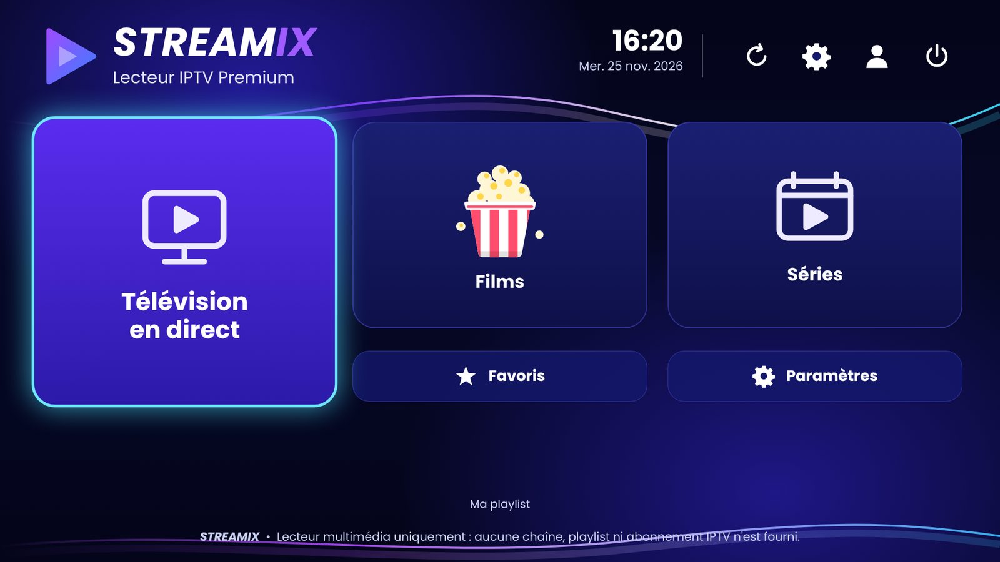
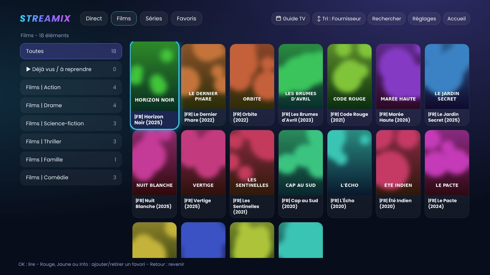
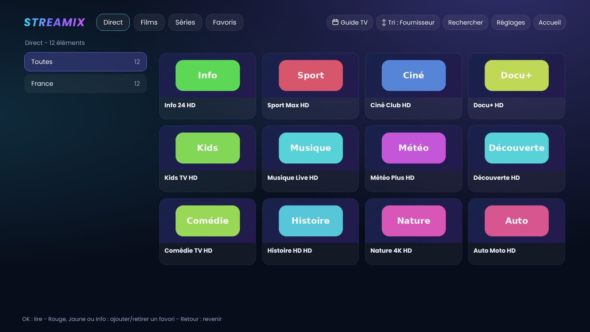

Toutes vos chaînes, films et séries.
Une app simple, sur votre TV.
STREAMIX lit votre playlist M3U ou votre compte Xtream avec une interface claire, rapide et en français. Pensé pour la télécommande, du premier clic à la dernière minute du film.

Tout ce qu'il faut, rien de compliqué
Les détails qui changent tout quand on regarde la TV avec une télécommande.
Direct, films et séries
Catégories, logos, affiches et fiches détaillées : résumé, année, durée, casting.
Reprise de lecture
Reprenez un film ou un épisode là où vous l'avez quitté. Vos contenus « Déjà vus » sont regroupés.
Épisode suivant
Enchaînez les épisodes automatiquement, passez le générique en un clic.
Langues et sous-titres
Français par défaut quand le film en propose plusieurs, choix de la langue et des sous-titres en direct.
Guide TV
Programme en cours et à venir sur les chaînes qui le fournissent.
Recherche globale
Trouvez un film ou une série dans toute votre playlist, avec suggestions pendant la frappe.
Favoris intelligents
Ajoutez une série entière en favori : les nouveaux épisodes sont signalés automatiquement.
Contrôle parental
Code à 4 chiffres pour les catégories adultes, et catégories masquables à volonté.
Ajout par QR code
Fini la saisie à la télécommande : scannez le QR code et ajoutez votre playlist depuis le téléphone.


Captures réalisées avec une playlist de démonstration. Le contenu affiché dépend de votre propre playlist.
Prêt en 3 minutes
Installez STREAMIX
Hisense (VIDAA) : ouvrez le navigateur de la TV et allez sur speckali.github.io/streamix-web. Ajoutez la page aux favoris.
Samsung et Android TV : bientôt disponible dans les stores.
Ajoutez votre playlist
Ouvrez l'icône profil en haut à droite, scannez le QR code avec votre téléphone, puis entrez votre lien M3U ou vos codes Xtream.
Activez à vie
Profitez de l'essai gratuit, puis activez votre TV pour 9,99 € sur la page Activer ma TV, avec l'adresse MAC et la clé affichées sur la TV.
Un seul paiement. Pour toujours.
Pas d'abonnement, pas de renouvellement, pas de mauvaise surprise.
- Une TV activée à vie
- Toutes les fonctions et les mises à jour
- Essai gratuit avant d'acheter
- Paiement sécurisé par carte, Apple Pay ou Google Pay
- Licence transférable si vous changez de TV
Questions fréquentes
STREAMIX fournit-il des chaînes ?
Non. STREAMIX est un lecteur, comme un lecteur de musique sans chansons. Vous ajoutez votre propre playlist (lien M3U ou compte Xtream) fournie par votre fournisseur.
Est-ce vraiment un paiement unique ?
Oui : 9,99 € une seule fois par TV, sans abonnement ni renouvellement. Toutes les mises à jour sont incluses.
Où trouver l'adresse MAC et la clé de ma TV ?
Dans STREAMIX, appuyez sur l'icône profil en haut à droite : l'adresse MAC et la clé à 6 chiffres s'y affichent, avec un QR code qui ouvre directement la bonne page sur votre téléphone.
Je change de TV, je dois repayer ?
Non. Écrivez-nous avec l'ancienne et la nouvelle adresse MAC : nous transférons votre licence.
Ça marche avec quels formats ?
Liens M3U / M3U8 et comptes Xtream Codes (serveur, identifiant, mot de passe). Flux HLS, MP4 et MKV selon ce que votre TV sait lire, jusqu'en 4K.
Une chaîne ne marche pas, c'est STREAMIX ?
Le plus souvent, c'est le serveur du fournisseur (chaîne en panne, trop de connexions en même temps). Essayez une autre version de la chaîne (FHD, HD) ou réessayez quelques minutes plus tard. Si le problème vient de l'app, écrivez-nous.
Comment vous contacter ?
Par e-mail : streamix62@gmail.com. Indiquez l'adresse MAC de votre TV pour une réponse plus rapide.